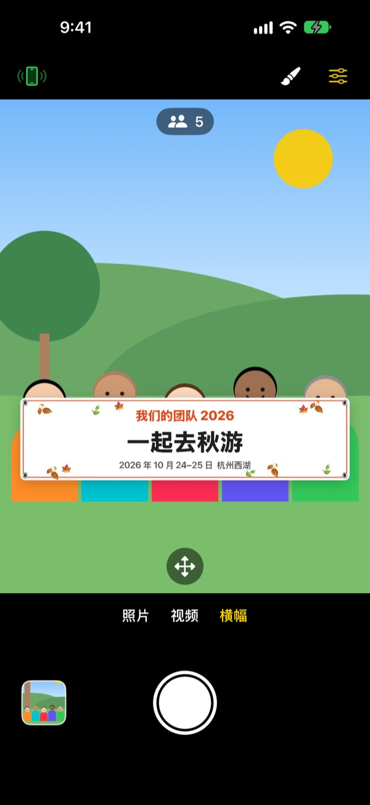
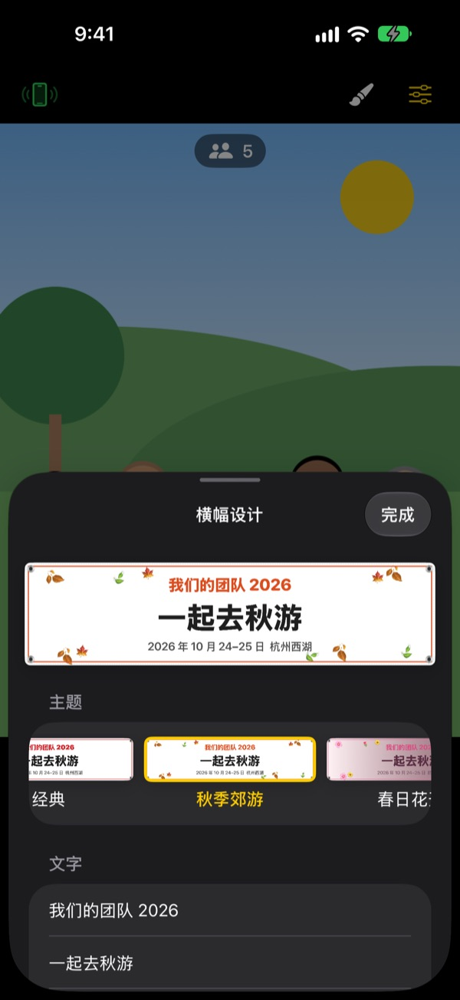

举横幅的合影，
不用真横幅
写好文字、选个主题，画面里的横幅就会稳稳出现在大家面前。朋友的 iPhone 扫一下二维码就成了遥控器，拍照的人也能一起入镜。
所有功能免费。支持 iOS 17 及以上版本。

动手做一条横幅
改改文字，点一个主题试试。按下快门后，会像 App 里一样倒数 3 秒再拍。
为了一张合影，还在专门定做横幅？
为了郊游的一张合影去定做横幅，当天还得带过去，用完又不知道放哪儿。没人帮忙拍，总有一个人进不了照片。ShutterLink 把横幅放进相机画面，再把朋友的 iPhone 变成遥控器，让每个人都能举着横幅出现在照片里。
一分钟做好适合这次聚会的横幅
从秋季郊游、春日花开、年会、生日、运动会、毕业、婚礼、公司研讨会等 13 个主题中挑一个，再亲手写三行文字。
背景、字体、装饰、颜色和比例都能改，还能放上 Logo 图片。材质可选布料、喷绘布和纸张，布质横幅会像真的一样下垂、起皱、随风飘动。

遥控器无需安装，扫码即用
点左上角的遥控按钮，就会出现二维码。朋友用系统相机一扫，ShutterLink Remote 会以 App Clip 的形式立即打开并连上。
遥控器的实时画面连横幅都能看到，构好图直接按快门就行。拍好的照片会立刻传到遥控 iPhone 上，没装 App 的朋友也能当场保存和分享。
三步就能开拍
- 1
立好 iPhone
打开 ShutterLink，把手机放在三脚架或架子上。
- 2
放好横幅
在下方选择横幅，用画笔按钮设定文字和主题，再轻点大家要站的地面。
- 3
举起手掌
举起手掌或按下遥控器快门，定时器倒数后就会拍摄。
为合影准备的功能
- 手掌手势 · 拍手快门
- 对着镜头举起手掌，或用力拍一下手，定时器就会开始
- 微笑快门
- 所有人都睁眼微笑时自动拍摄
- 定时 3 · 5 · 10 · 20 · 30 秒
- 语音倒数，闪光灯同步闪烁，遥控器在手里振动提醒
- 提醒大家看镜头
- 按一下，拍摄用的 iPhone 会出声提醒，把大家的视线集中过来
- 连拍 3 张 · 5 张
- 自动挑出所有人都睁眼微笑的最佳照片，也可以在图库里换成其他一张
- 人数 · 边缘 · 水平仪
- 统计画面里的人数，有人被挤到边缘或画面歪了都会提醒
- 间隔拍摄 3 秒到 1 分钟
- 按固定间隔记录日落或制作过程
- 相机控制
- 轻点对焦与测光、曝光补偿、闪光灯、网格、0.5 倍到最高 10 倍变焦（视机型而定）、前后摄像头切换、视频
- 简易模式
- 遥控器上只显示一个大快门按钮，长辈也能轻松按
- 音量键 · 相机控制按钮
- 不用遥控器，直接在拍摄用的 iPhone 上按快门
横幅模式下不能使用闪光灯、连拍、变焦和前置摄像头。定时器、手掌快门和遥控器照常可用。
所有功能都免费
免费
- 横幅模式和 13 个主题
- 无需安装的遥控器（App Clip）
- 手掌、拍手、微笑快门和定时器
- 最佳照片、人数统计、水平仪
- 视频和间隔拍摄
打赏支持（可选）
- 可以在设置里选择小、中、大三种打赏
- 打赏不会解锁或限制任何功能
不是订阅，只在打赏时付一次款。
没有广告，也不用注册账号。
常见问题
需要准备什么？
在拍摄用的 iPhone 上安装 ShutterLink（iOS 17 及以上）。当遥控器的 iPhone 不用安装，只在第一次打开App Clip 时需要联网。两台 iPhone 都要打开蓝牙，并放得近一些（一般在 10 米以内）。
扫了二维码，App Clip 却打不开。
请确认遥控 iPhone 已联网。也可以不扫码，在 ShutterLink Remote 画面输入拍摄 iPhone 上显示的 4 位连接码，再点“连接”。另外请在“设置 › 屏幕使用时间 › 内容和隐私访问限制”中确认App Clip 没有被限制。
一直停在“正在查找相机…”。
拍摄用的 iPhone 必须让 ShutterLink 保持在屏幕上。请在两台 iPhone 的“设置 › 蓝牙”中确认蓝牙已打开。连接码每次打开 App 都会变，如果重新打开过 App，请用新的二维码或连接码，然后点“重试”。
显示“蓝牙权限被拒绝”。
请在“设置 › 隐私与安全性 › 蓝牙”中打开 ShutterLink。遥控端是App Clip，可能不在列表里，这时请重新扫一次二维码，在权限请求中点“允许”。
实时画面卡顿或模糊。
实时画面为了通过蓝牙传输，特意压缩成了小尺寸。实际的照片和视频会以拍摄 iPhone 的原始画质保存。两台手机之间有墙、有人或距离较远时可能会卡顿，但快门和其他操作依然有效。
拍好的照片在哪里？
保存在拍摄 iPhone 的“照片”App 和 App 内的图库里。遥控 iPhone 也会收到一份副本，但不会自动保存，请在关闭遥控器前保存或分享。如果“照片”里没有，请在“设置 › 隐私与安全性 › 照片”中允许 ShutterLink 访问。
视频没有声音。
请在“设置 › 隐私与安全性 › 麦克风”中打开 ShutterLink。
可以连接多个遥控器吗？
可以。多台 iPhone 能用同一个二维码或连接码同时连上，不管从哪台按快门，拍的都是同一台相机。
拍摄时连接断了。
ShutterLink 打开时会让屏幕保持常亮。按侧边按钮锁屏或切到别的 App 都会断开连接，所以拍摄期间请让 App 一直显示在屏幕上。
照片会上传到哪里吗？
不会。两台 iPhone 通过蓝牙直接连接，照片和视频只留在拍摄的 iPhone 和连上的遥控器上。在没有信号的山上或海边也能用，也不需要账号。
问题没解决或发现了 Bug？请发邮件到 leeo@kakao.com。写上两台 iPhone 的机型和 iOS 版本，能更快帮你查明原因。